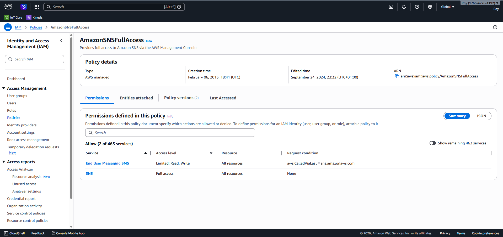

1. Executive Summary & Challenge
This project demonstrates a production-grade bridge between **Operational Technology (OT)** and **Information Technology (IT)**. Modern manufacturing environments face three primary hurdles when moving data to the cloud: Hardware-level security, UK data residency, and logical isolation between multiple factory sites.
This architecture addresses these by utilizing a decoupled, event-driven pattern that ensures no data loss during ingestion spikes while providing millisecond-level alerting.
2. Visual Architecture: The Solution

3. Architectural Decision Records (ADR)
ADR 01: X.509 mTLS for Edge Identity
Implemented certificate-based mutual TLS to ensure hardware-level identity. This aligns with **ISA/IEC 62443** standards, ensuring only provisioned devices can access the London endpoint.
ADR 02: Kinesis for Back-Pressure Management
Integrated Amazon Kinesis as a durable buffer. This prevents Lambda concurrency throttling during telemetry spikes, ensuring 100% data durability and ordered processing.
ADR 03: Tenant-Aware Sharding
Utilised ${tenant_id} as the Kinesis Partition Key. This ensures telemetry from specific sites (e.g., Coventry) stays in sequence and is logically isolated within the data stream.
4. Well-Architected Framework Mapping
| Pillar | Implementation Detail |
|---|---|
| Security | X.509 mTLS at edge; IAM Least Privilege for cross-service calls. |
| Reliability | Amazon Kinesis buffering to manage high-velocity telemetry bursts. |
| Performance | Partition Key sharding by tenant_id for ordered scaling. |
| Cost | 100% Serverless execution (Lambda/SNS) for zero-cost idle state. |
5. Security Governance (IAM)
Enforced strict access control. The following policy validates the secure, scoped interaction between the IoT rules engine and the notification service.

6. Functional Proof: Real-Time Outcomes
The system correctly identifies overheating (Temp > 80°C) and dispatches alerts via SNS within seconds. Below are the verified execution logs alongside the live user notification.

7. Future Roadmap
- Phase 1: Cold Storage: Implementing Kinesis Firehose for S3 Data Lake archiving and historical auditing via Athena.
- Phase 2: Predictive Maintenance: Leveraging Amazon SageMaker to transition from reactive alerts to predictive failure forecasting.
- Phase 3: Visualisation: Developing multi-site executive dashboards using Amazon QuickSight.